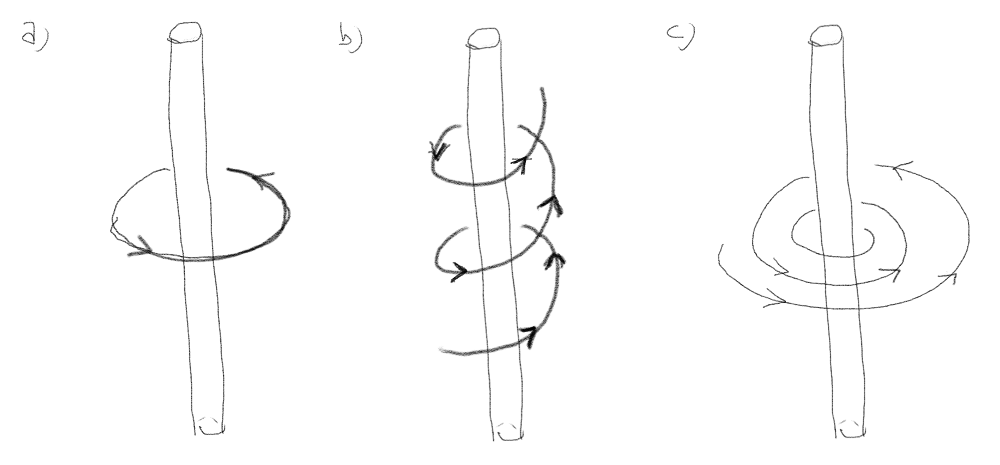
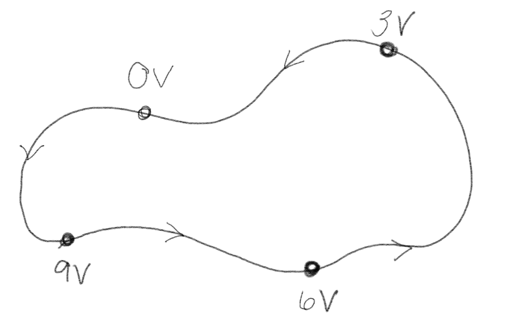
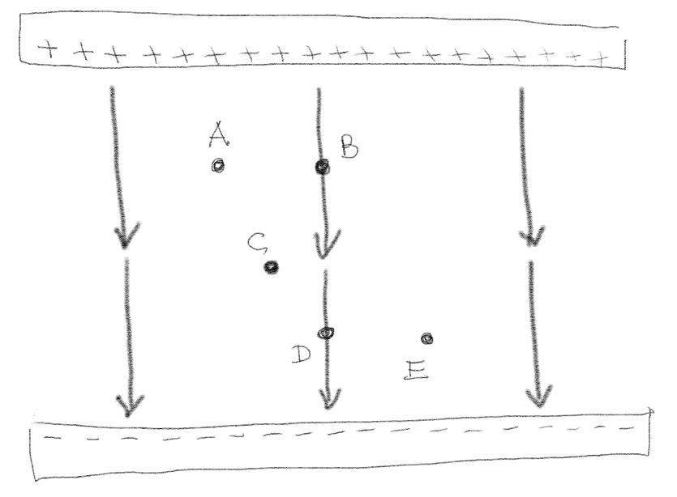
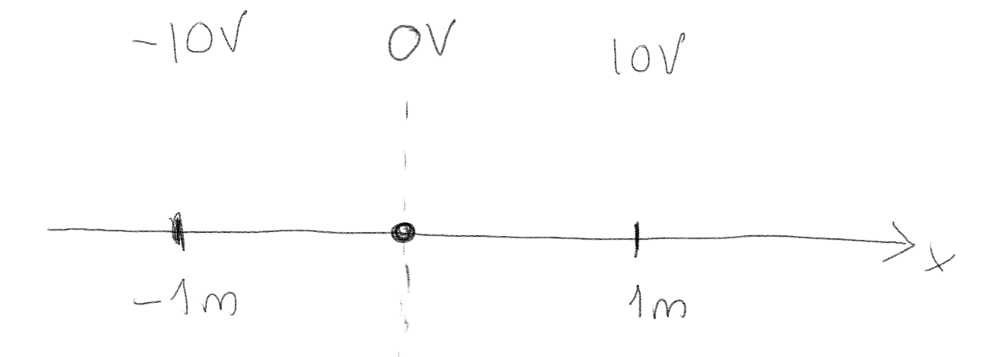
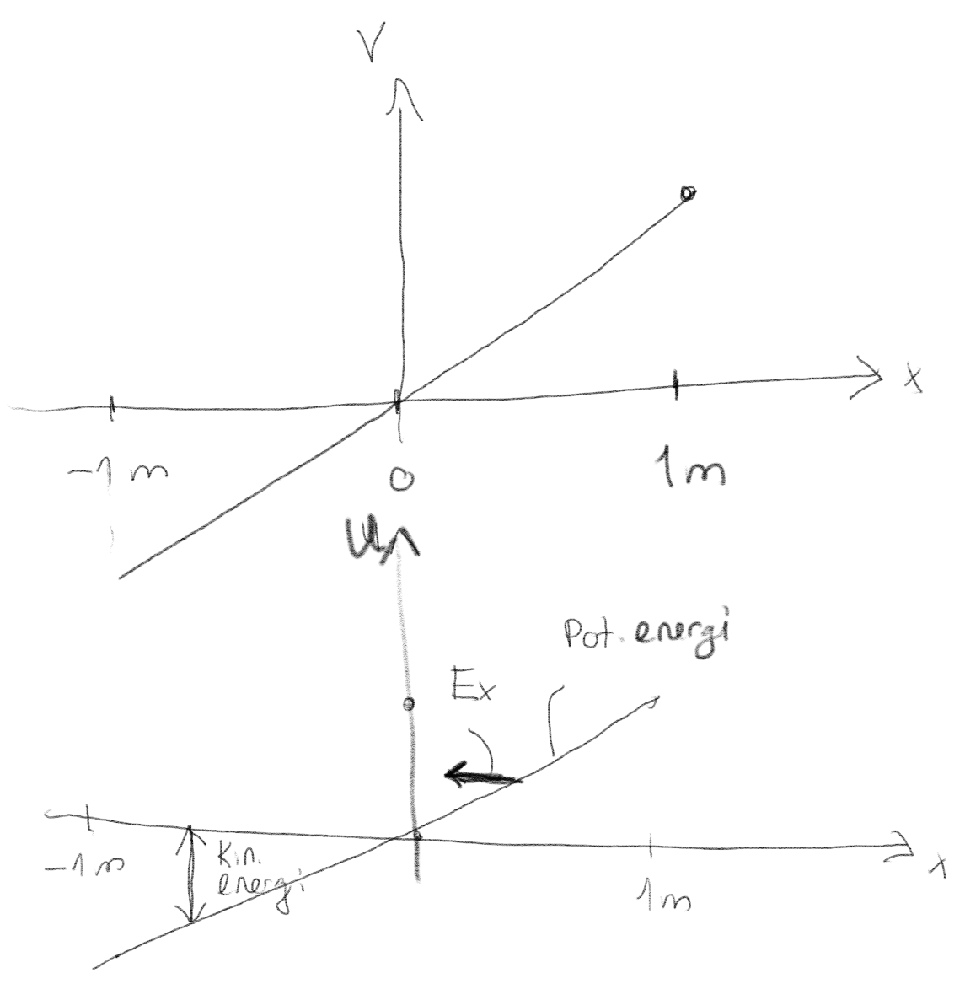
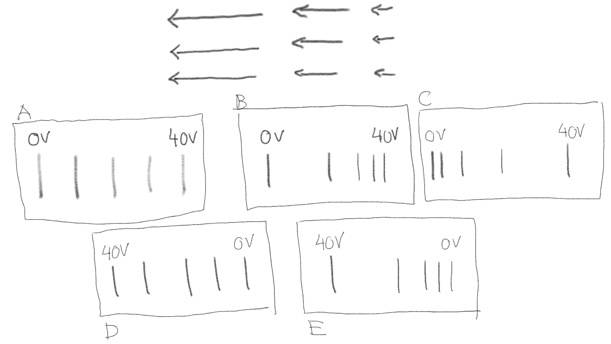
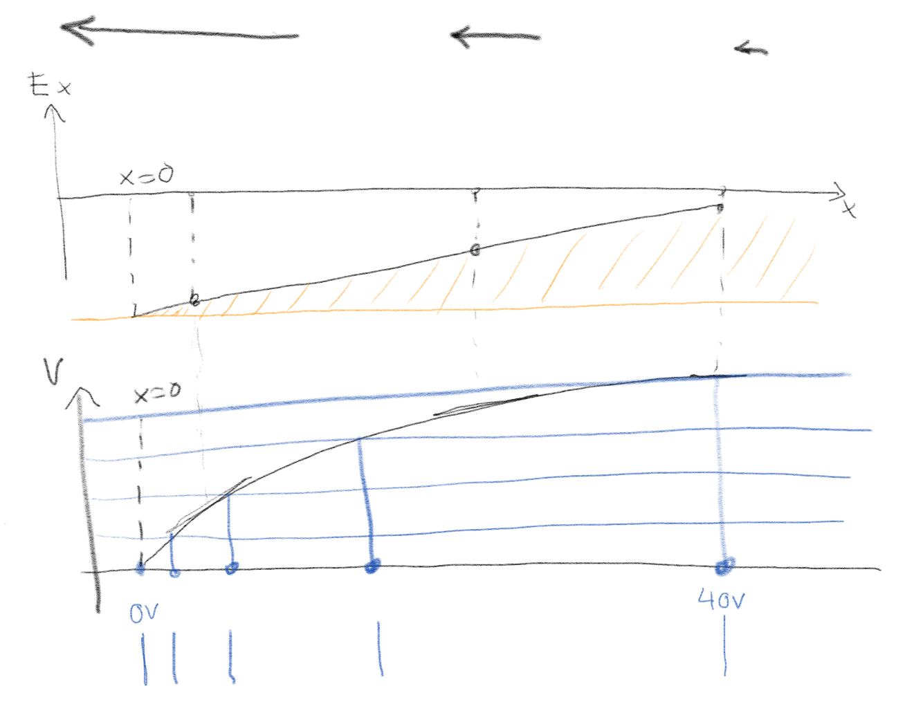
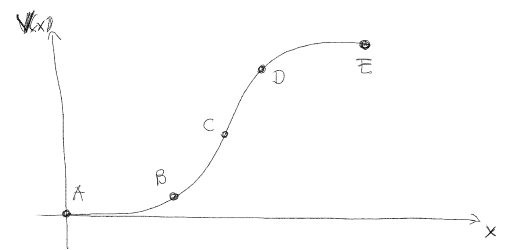

(Lærebok 2.1.0-2.1.1)
Figuren viser en positiv ladning som beveger seg i forskjellige baner rundt en positivt ladet stav. Er arbeidet utført av kraften fra staven på ladningen positivt, negativt eller null i de tre tilfellene?

a) Sirkelbane med konstant radius.
0
Kraften virker normalt på banen, derfor er arbeidet null.
b) Helix-bane med konstant radius.
0
Kraften virker også her normalt på banen. Det er ingen \( z \)-komponent i kraften (dersom staven er uendelig lang), derfor har det ingen betydning at ladningen beveger seg i \( z \)-retningen.
c) Spiralbane med avtagende radius.
Kraften fra staven på ladningen vil være frastøtende. Arbeidet utført av kraften blir derfor negativt. I dette tilfellet må det være en annen kraft som virker på ladningen også for å få til denne bevegelsen, men det endrer ikke på svaret: Arbeidet utført av kraften vil være negativt.
Negativt.
(Lærebok 2.2)
Figuren viser det elektriske potensialet på forskjellige punkter langs en lukket krets.

a) Er denne kretsen fysisk mulig?
Ja
Vi vet at \( \oint_C \vec{E} \cdot \d \vec{l} = 0 \). Det er tilfellet i dette systemet: Går vi en hel runde er vi tilbake der vi startet, og det er ikke noen endring i potensial. Det kan være forvirrende at potensialet øker fra 0 til 9V. Det svarer til at det er et batteri i kretsen.
(Lærebok 2.3.1-2.3.2)
En ladning \( Q \) befinner seg i punktet \( (a,0,0) \).
a) Hva er det elektriske potensialet i origo?
\( \frac{Q}{4 \pi \epsilon_0 a} \)
Vi antar at referansepunktet er uendelig langt vekk. Hvis vi ikke antar dette har ikke spørsmålet et veldefinert svar, men vil avhenge av valget av referansepunkt. I så fall er det eletriske potensialet: $$ \begin{equation} V = \frac{Q}{4 \pi \epsilon_0 R} \tag{1} \end{equation} $$ hvor \( \vec{R} = \vec{0} - (a,0,0) = - a \x \) og \( R = a \). Dermed er $$ \begin{equation} V(0) = \frac{Q}{4 \pi \epsilon_0 a} \; . \tag{2} \end{equation} $$
b) Hva er det elektriske potensialet uendelig langt borte?
0
Vanligvis velger vi referansepunktet til å være uendelig langt borte, og potensialet her blir da null.
To ladninger \( Q \) befinner seg i punktene \( (a,0,0) \) og \( (-a,0,0) \).
a) Hva er det elektriske potensialet i origo?
\( \frac{Q}{2 \pi \epsilon_0 a} \)
Merk at selv om det elektriske feltet i dette punktet er null, er ikke potensialet lik null. Det vil virke en kraft på en testladning så snart den flyttes vekk fra origo, så arbeidet som utføres på en testladning når den flyttes fra origo og uendelig langt vekk er ikke null.
Vi finner svaret ved superposisjonsprinsippet. $$ \begin{equation} V(0) = V_1(0) + V_2(0) \tag{3} \end{equation} $$ Vi fant svaret for \( (a,0,0) \) i forrige oppgave. Bidraget fra ladningen i \( (-a,0,0) \) vil være det samme, slik at det totale svaret blir $$ \begin{equation} V(0) = 2 V_1(0) = 2 \frac{Q}{4 \pi \epsilon_0 a} \; . \tag{4} \end{equation} $$
Figuren viser et uniform elektrisk felt \( \vec{E} \) mellom to uendelig lange ladete plater.

a) Ranger de elektriske potensialene, \( V_A, \ldots, V_E \), fra største til minste.
\( V_A = V_B > V_C > V_D = V_E \)
Vi finner det elektriske potensialet i punktet \( X \) fra $$ \begin{equation} V_X = \int_X^{\text{ref}} \vec{E} \cdot \d \vec{l} \; . \tag{5} \end{equation} $$ Vi plasserer referansepunktet i bunnen på den negative platen. Vi ser da at integralet er fra punktet \( X \) til den negative platen, dvs. i retningen til det elektriske feltet. Siden det elektriske feltet er uniformt kan vi plassere det utenfor integralet og vi finner: $$ \begin{equation} V_X = \vec{E} \cdot \int_X^0 \d \vec{l} = \vec{E} \cdot \vec{s} \; . \tag{6} \end{equation} $$ Potensialet blir da avhengig av avstanden fra punktet og normalt ned på den nedre flaten. Rangering av potensialene blir da det samme som å rangere avstandene.
(Lærebok 2.4)
(Lærebok 2.5)
Et proton slippes fra origo med null hastighet. Hva skjer med protonet?

a) 1/2/3/4/5?
Det beveger seg i negativ retning med økende hastighet.
Vi kan bruke en energibetraktning. Den potensielle energien er \( qV \) og \( q=e \) er positiv for et proton. Energien til protonet er bevart. Figuren under viser et energidiagram for protonet.

Det vil bevege seg mot lavere potensiell energi og høyere kinetisk energi, dvs, i negativ \( x \)-retning med økende hastighet. Vi kan også ta utgangspunkt i at \( \vec{E} = - \nabla V \), slik at kraften på protonet vil være i den retningen potensialet avtar.
Figuren under viser et elektrisk felt. Hvilket sett med ekvipotensial-linjer passer best til dette feltet?

a) .
C
Vi kan bruke flere metoder for å svare på denne oppgaven. Vi har i figuren under plottet inn det elektriske feltet som funksjon av posisjon, \( E_x(x) \). Vi kan da finne det elektriske potensialet ved $$ \begin{equation} V(x) = \int_x^0 E_x \d x = - \int_0^x E_x \d x \tag{7} \end{equation} $$ Vi kan derfor lese av det elektriske potensialet som arealet under kurven \( E_x \). For å bestemme dette arealet må vi bestemme et nullpunkt for potensialet. Vi kan sette dette til \( x=0 \). Da er arealet under kurven ned til den gule linjen. Vi har tegnet inn dette i figuren under.

Så skal vi finne ekvipotensial-linjene. Vi tegner inn blå linjer for forskjellige verdier for \( V \), her for $V=0$V, $V=10$V, $V=20$V, $V=30$V og $V=40$V. Plasseringen av disse linjene langs \( x \)-aksen, som er vist som blå punkter, er da ekvipotensial-linjene (eller punktene da). Vi kan så sammenlikne denne figuren med figurene i oppgaven, og ser at alternativ C passer best.
Figuren under viser et elektrisk potensial.

a) Hvor er absolutt-verdien av det elektriske feltet størst?
C
Det elektriske feltet er gitt som \( \vec{E} = - \nabla V \) som i en dimensjon gir \( E_x = - \d V / \d x \). Vi ser at den deriverte er størst i punktet C, mens den er null i A og E. Feltet er negativt i C, men siden det spørres om absolutt-verdien er riktig svar C.
Et elektrisk potensial er gitt som: $$ \begin{equation} V = -x^2- 2y^2 - 3z^2 \tag{8} \end{equation} $$
a) Hva er det elektriske feltet?
\( (2x,4y,6z) \)
Det elektriske feltet er $$ \begin{equation} \vec{E} = -\nabla V = -(\frac{\partial V}{\partial x},\frac{\partial V}{\partial y},\frac{\partial V}{\partial z} ) = (2x,4y,6z) \; . \tag{9} \end{equation} $$
b) I hvilken retning øker det elektriske potensialet hurtigst i punktet \( (1,1,1) \)?
\( -\frac{(1,2,3)}{\sqrt{14}} \)
Det elektriske feltet øker hurtigst i retningen til gradienten som er minus retningen til feltet, dvs i retningen gitt av \( -(2\times 1, 4 \times 1, 6 \times 1) = -(2,4,6) \) som vi kan skrive om som en enhetsvektor \( \uhat \): $$ \begin{equation} \uhat = -\frac{(2,4,6}{\sqrt{2^2 + 4^2 + 6^2}} = -\frac{(1,2,3)}{\sqrt{14}} \; . \tag{10} \end{equation} $$